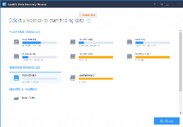

Proceso de Recuperacion
Cuando se eliminan datos de los dispositivos de almacenamiento, las referencias a los datos se eliminan de la estructura del directorio. Luego, el espacio se puede usar, o sobrescribir, con datos de otros archivos o funciones de la computadora. Los datos eliminados en sí no se eliminan inmediatamente de la unidad física y, a menudo, existen como una serie de fragmentos desconectados. Estos datos, siempre que no se sobrescriban, se pueden recuperar.
El software escanea los discos de dos formas diferentes, ejecutadas en sucesión, para buscar datos perdidos: primero según el directorio de archivos y el segundo según el contenido de almacenamiento. El primer método escanea el directorio de archivos y recupera los datos simplemente eliminados o vaciados de la Papelera de reciclaje, donde el registro del archivo y el contenido de los datos asociados aún están intactos. El segundo método busca sector por sector a través del contenido de almacenamiento para recrear archivos desde el campo de datos. Este segundo método lleva mucho más tiempo y no conserva los nombres de archivo originales ni la estructura de carpetas. [5] [6] Los datos descubiertos se pueden filtrar para buscar archivos particulares, y los usuarios pueden obtener una vista previa de los archivos antes de recuperarlos.
Se pueden crear dispositivos de arranque , con una unidad USB o una unidad externa, para recuperar datos cuando el sistema operativo no arranca. Esta utilidad solo se puede utilizar para recuperar datos una vez que se inicia la computadora.
